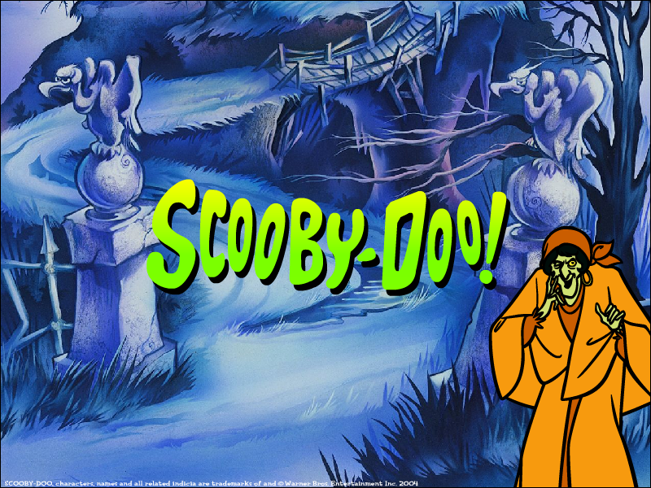
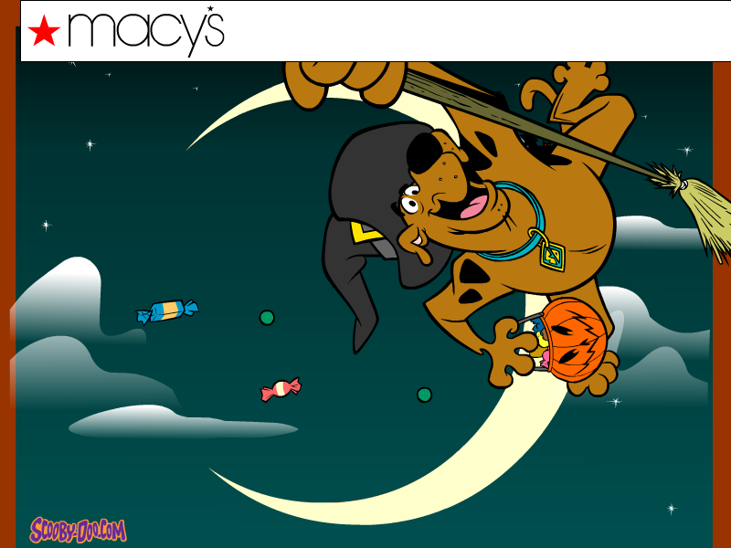
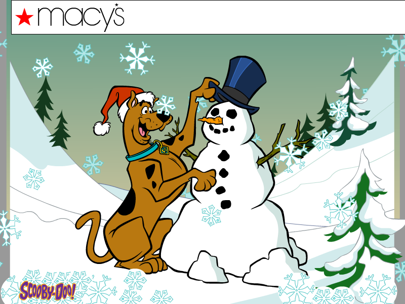
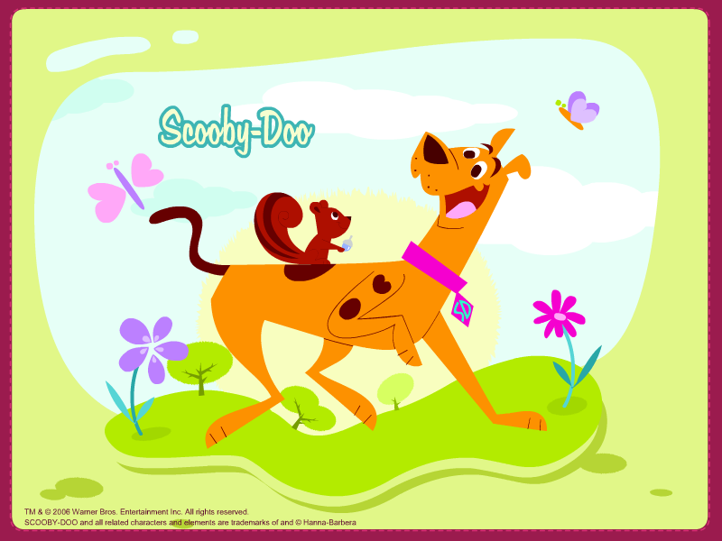
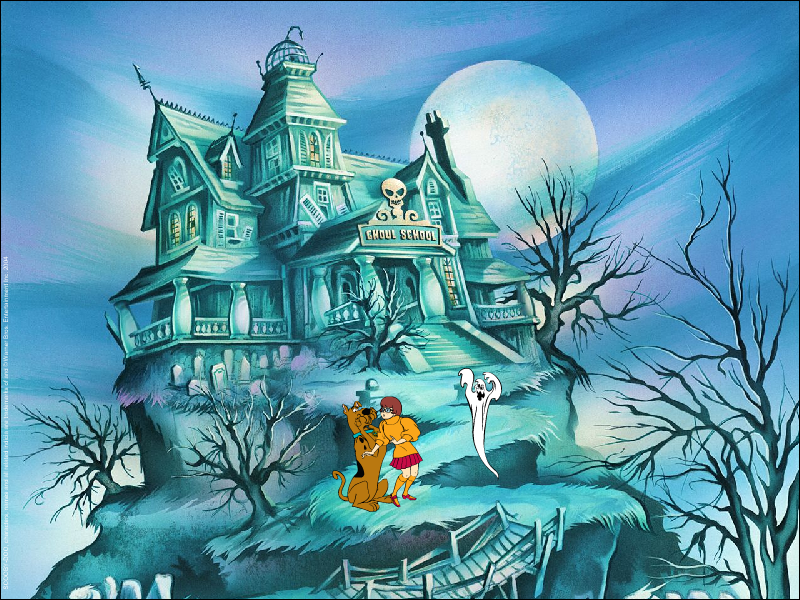
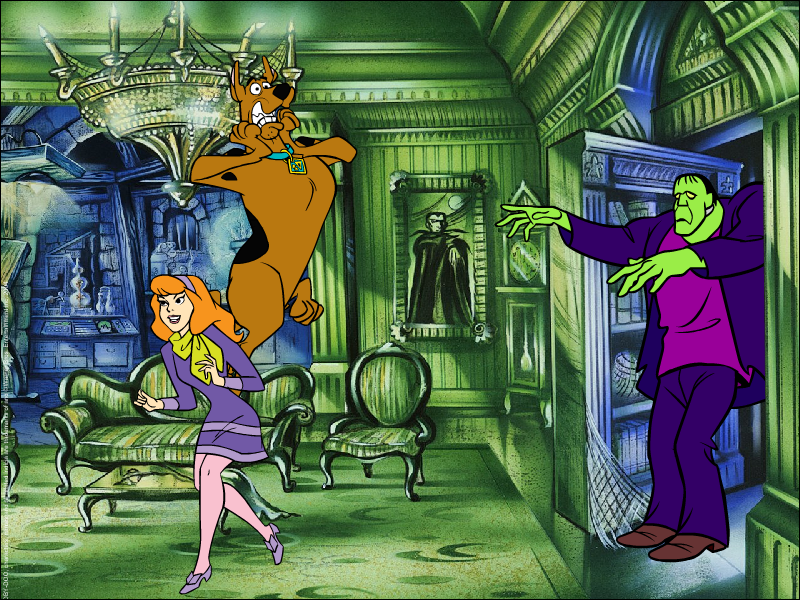
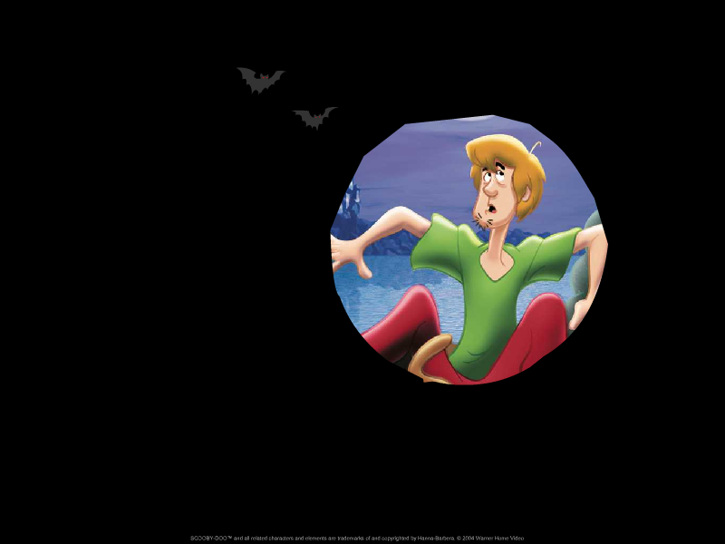
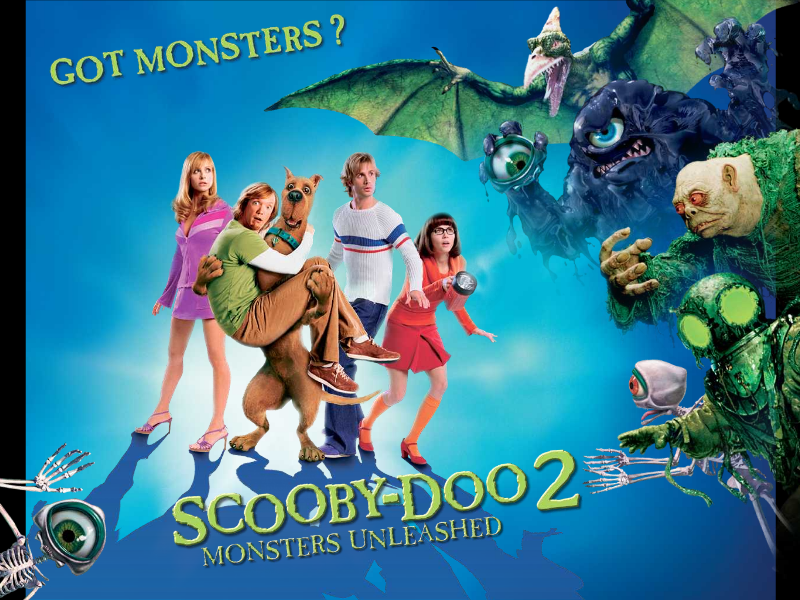

.exe file zipped (Windows) (1.14 MB).sit file (Mac OS) (1.51 MB).exe file zipped (0.98 MB).exe file zipped (Windows) (0.99 MB).sit file (Mac OS) (1.16 MB)
.exe file zipped (Windows) (1.14 MB).sit file (Mac OS) (1.51 MB).exe file zipped (0.98 MB).exe file zipped (Windows) (0.99 MB).sit file (Mac OS) (1.16 MB) .exe file zipped (Windows) (1.42 MB).exe file zipped (alternate) (Windows) (1.08 MB).sit file (Mac OS) (1.15 MB).sit file (alternate) (Mac OS) (1.29 MB)
.exe file zipped (Windows) (1.42 MB).exe file zipped (alternate) (Windows) (1.08 MB).sit file (Mac OS) (1.15 MB).sit file (alternate) (Mac OS) (1.29 MB)
.exe file zipped (Windows) (3.24 MB).sit file (Mac OS) (1.94 MB)
.exe file zipped (Windows) (973 KB).sit file (Mac OS) (1.15 MB)
.exe file zipped (Windows) (1.18 MB).sit file (Mac OS) (1.39 MB)
.exe file zipped (Windows) (1.33 MB).sit file (Mac OS) (1.28 MB)
.exe file zipped (Windows) (1.53 MB).sit file (Mac OS) (1.71 MB)
.exe file zipped (Windows) (1.41 MB).sit file (Mac OS) (1.59 MB).exe file zipped (Windows) (1.25 MB).sit file (Mac OS) (1.20 MB)
.exe file zipped (1.20 MB) .exe file zipped (Windows) (0.99 MB).sit file (Mac OS) (792 KB)
.exe file zipped (Windows) (0.99 MB).sit file (Mac OS) (792 KB) .exe file zipped (584 KB)
.exe file zipped (584 KB) .exe file zipped (562 KB)
.exe file zipped (562 KB) .exe file zipped (670 KB)
.exe file zipped (670 KB) .exe file zipped (592 KB)
.exe file zipped (592 KB)
.exe file zipped (1.71 MB)